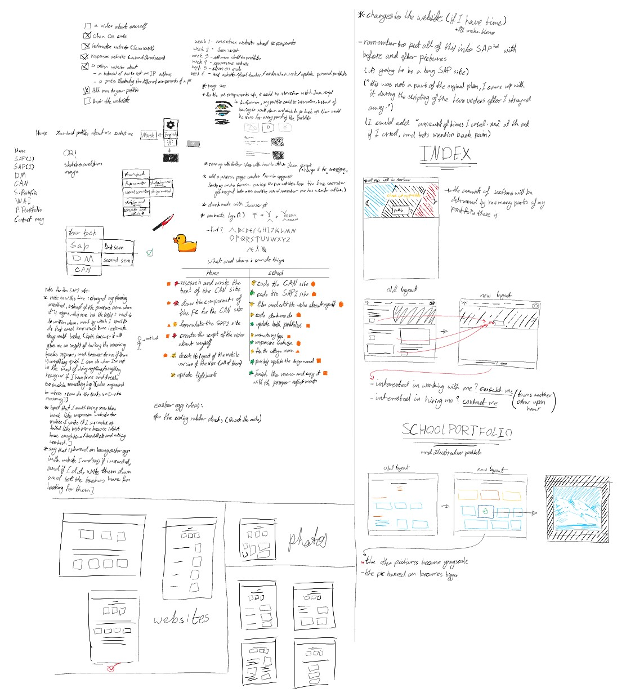
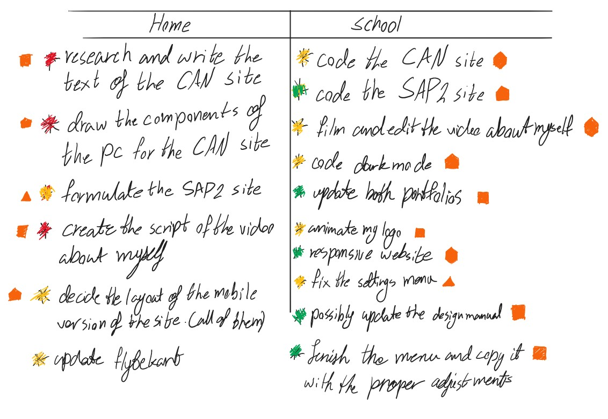
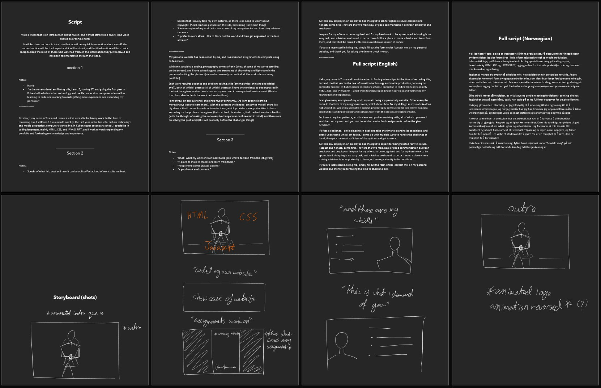
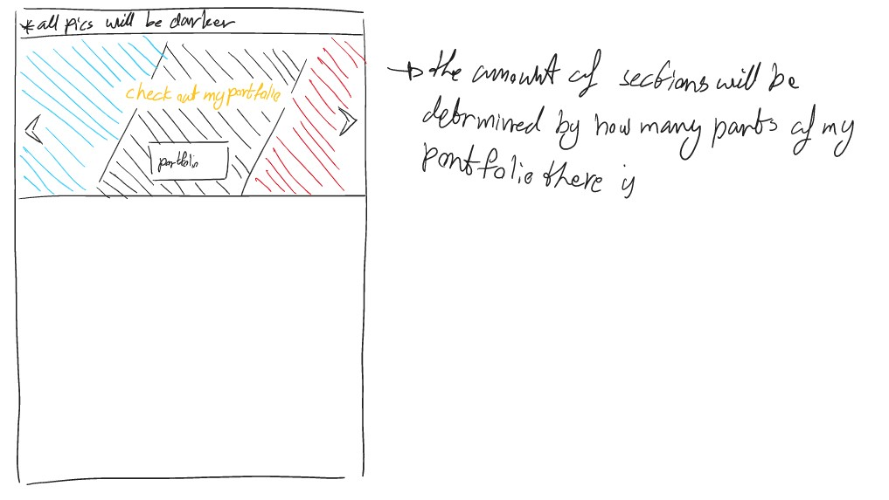
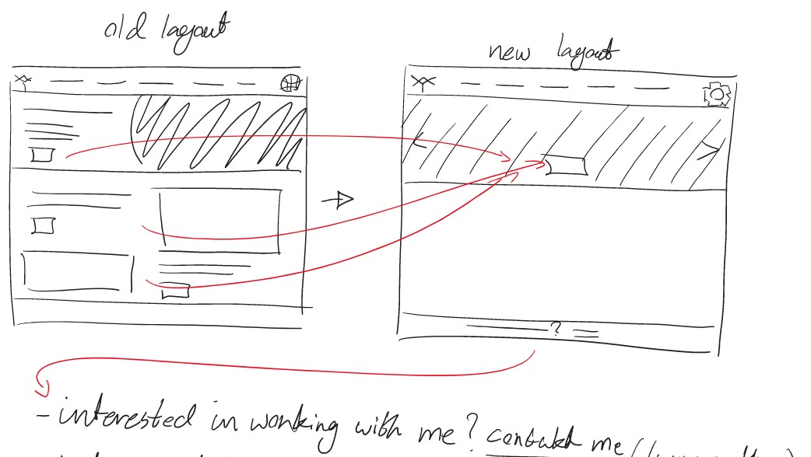
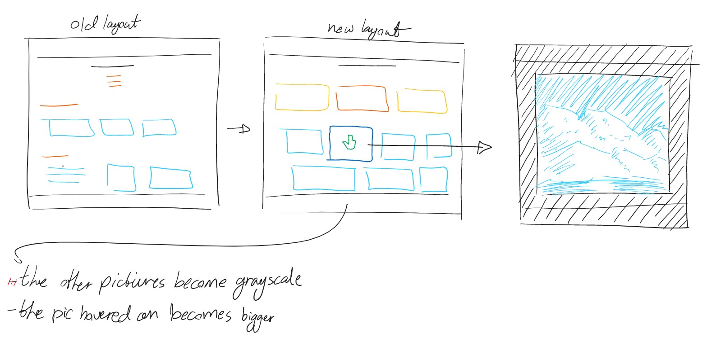
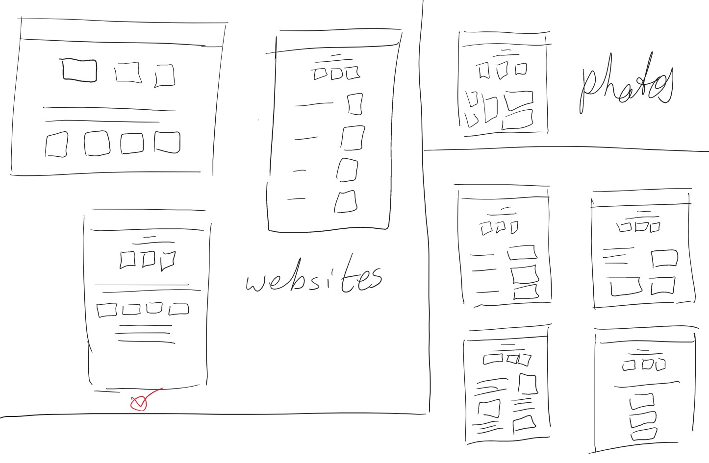

Andre semester var veldig annerledes enn det første, til ingens overraskelse. I løpet av andre semester lærte vi JavaScript, som ga oss flere muligheter til å forbedre nettsidene våre som vi ikke var klar over fra før. Arbeidsflyten min endret seg, jeg tok det jeg lærte fra første semester og inkorporerte det i andre semester, hovedsakelig min måte å planlegge på. I stedet for å tildele hver oppgave tid, skrev jeg alle oppgavene mine og markerte hvilke som kunne gjøres enkelt og som trengte forskning og mye tid (dette hjalp også når det gjaldt energinivået mitt, det var fint å ha noe lett å jobbe med når jeg ikke var motivert.)
Nedenfor er alle notatene mine i løpet av semesteret.
Nedenfor er alle notatene mine i løpet av semesteret.

Jeg hadde mye håp for dette semesteret. Jeg skrev ned alt, planla å bringe tilbake gamle ideer (for eksempel min resposive layout for mobiltelefoner), og til høyre kan du se listen jeg opprettet over oppgavene jeg måtte gjøre, og jeg merket dem på hva som må gjøres først (fargene [rød, gul, grønn]), og tiden og kreftene som må legges ned i dem (oransje former, jo flere hjørner de hadde, jo vanskeligere var oppgaven). Jeg hadde til og med planlagt å legge igjen påskeegg hvis jeg fikk tid.
Jeg hadde klart å fullføre de fleste oppgavene mine, men noen måtte forlates da jeg ikke hadde nok tid. En av hovedoppgavene jeg måtte droppe var videoen om meg selv. Det var ikke det at jeg droppet det, jeg hadde faktisk filmet hele greia på både engelsk og norsk, men det jeg fikk til å se videofilene, fant ut at de manglet lyd. De første fire minuttene hadde lyd, men den avbrytes plutselig uten tilsynelatende grunn.
Jeg lot ikke det drepe humøret mitt, og mens jeg spilte inn voice over for IP-adressevideoen, tok jeg opp voice over i stedet for de slettede lydene. Men selv da, da det var på tide å redigere videoen, kunne jeg ikke fordi overraskelse, den hadde ingen lyd og jeg hadde ingen anelse om hva jeg sa for å synkronisere lyden med videoen. Da hadde jeg bare et par dager igjen til deadline, og jeg hadde ikke tid til å ta opp alt på nytt.
Det du ser nedenfor er manuset og det lille storyboardet som jeg laget til videoen.
Jeg hadde klart å fullføre de fleste oppgavene mine, men noen måtte forlates da jeg ikke hadde nok tid. En av hovedoppgavene jeg måtte droppe var videoen om meg selv. Det var ikke det at jeg droppet det, jeg hadde faktisk filmet hele greia på både engelsk og norsk, men det jeg fikk til å se videofilene, fant ut at de manglet lyd. De første fire minuttene hadde lyd, men den avbrytes plutselig uten tilsynelatende grunn.
Jeg lot ikke det drepe humøret mitt, og mens jeg spilte inn voice over for IP-adressevideoen, tok jeg opp voice over i stedet for de slettede lydene. Men selv da, da det var på tide å redigere videoen, kunne jeg ikke fordi overraskelse, den hadde ingen lyd og jeg hadde ingen anelse om hva jeg sa for å synkronisere lyden med videoen. Da hadde jeg bare et par dager igjen til deadline, og jeg hadde ikke tid til å ta opp alt på nytt.
Det du ser nedenfor er manuset og det lille storyboardet som jeg laget til videoen.


Det var selvfølgelig ikke det eneste jeg ikke hadde tid til, men det var i hvert fall ikke påkrevd av oppgaven vår. Jeg ønsket å endre Hjem-nettstedet og gi det en mer tiltalende layout. Jeg klarte ikke å lage den på grunn av mangel på tid, men jeg har skissert oppsettet.

Portfolioen min var en annen ting jeg ønsket å endre, og jeg fikk hovedideen min til å jobbe ut mens jeg forlot resten. Porteføljen endret seg fullstendig, og nå er den delt inn i faner som man kan klikke for å sjekke ut hver enkelt del av porteføljen min.

Gammel layout:

Ny layout:

Noe skisser av ny layouten av portfolioen.

Der har vi selvfølgelig lagt til nye nettsider, som nettsiden "datamaskin og nettverk" og skisser og planer for andre semester. Menyen hadde blitt endret tilsvarende for å passe dem.
Totalt sett skjedde det mange endringer, mest til det bedre, og jeg har blitt en bedre koder (og min metode og stil for koding har også endret seg.) Jeg gjør disse som positive endringer, og mens jeg er ambisiøs og har høyere mål enn oppgaven hadde gitt oss, og det hadde ført til et problem hvis jeg måtte være sannferdig, det er også noe jeg kan bruke til min fordel og en som hadde formet og bygget denne nettsiden til det den ble. Å lage dette prosjektet var ganske spennende, en veldig ny og morsom en, og jeg ser mot fremtiden og hva den har for meg.
Totalt sett skjedde det mange endringer, mest til det bedre, og jeg har blitt en bedre koder (og min metode og stil for koding har også endret seg.) Jeg gjør disse som positive endringer, og mens jeg er ambisiøs og har høyere mål enn oppgaven hadde gitt oss, og det hadde ført til et problem hvis jeg måtte være sannferdig, det er også noe jeg kan bruke til min fordel og en som hadde formet og bygget denne nettsiden til det den ble. Å lage dette prosjektet var ganske spennende, en veldig ny og morsom en, og jeg ser mot fremtiden og hva den har for meg.